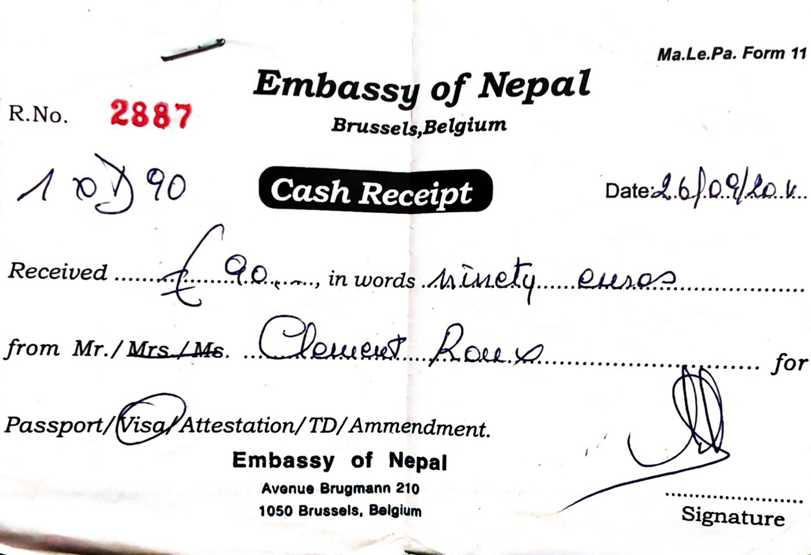
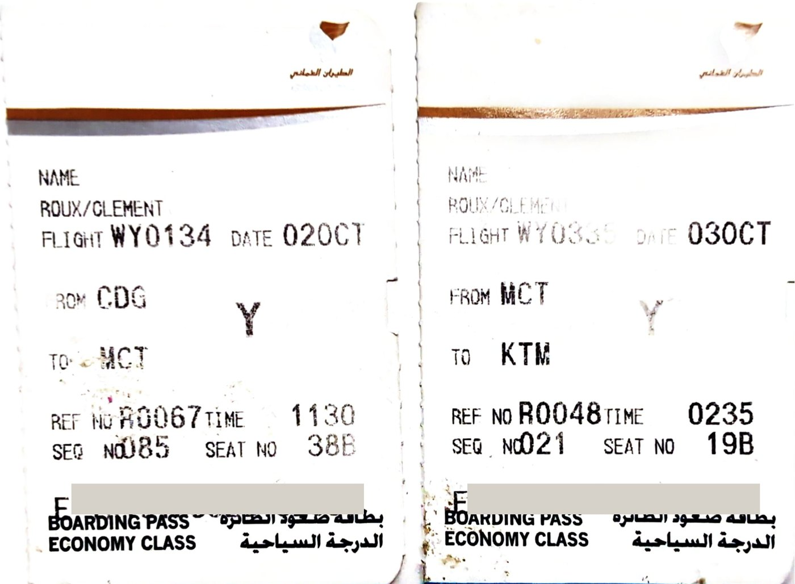
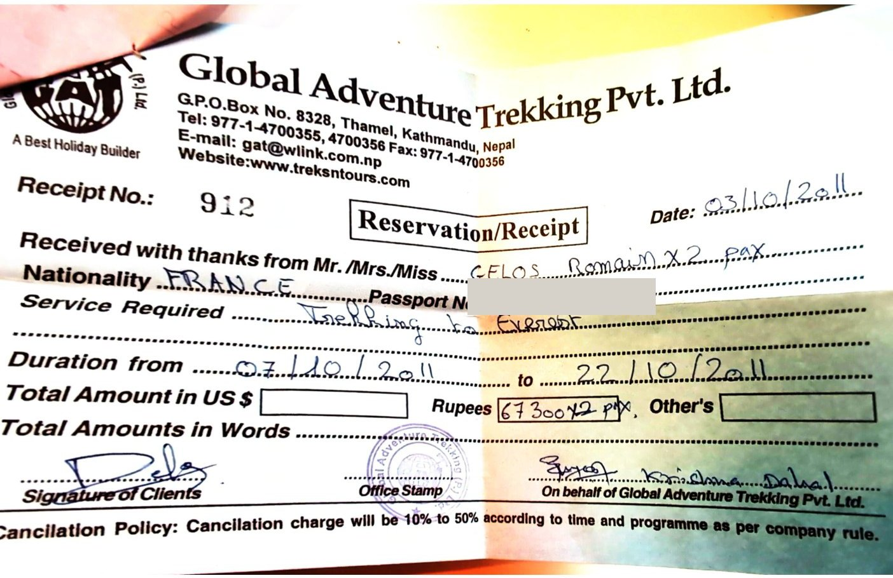
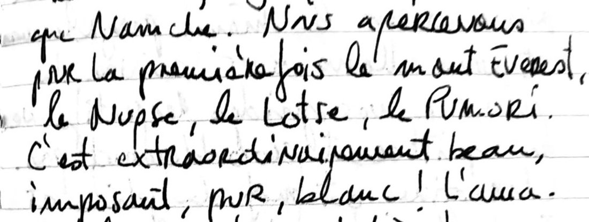
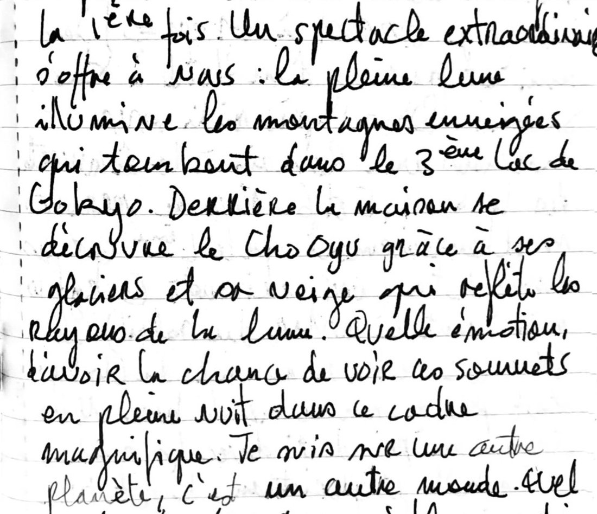
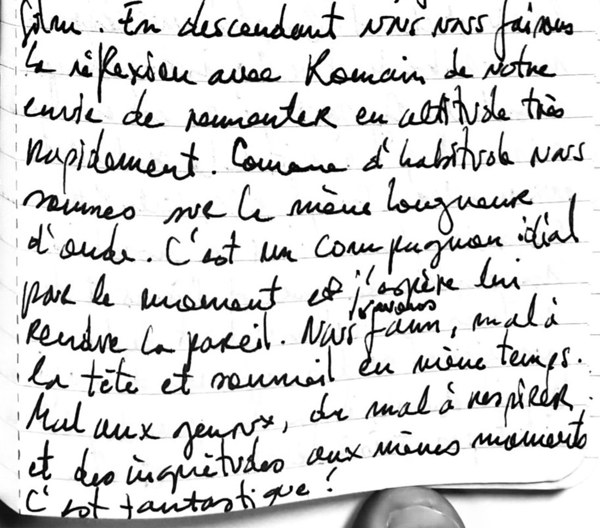

Chapitre 1 · 29 septembre – 20 octobre 2011
Le trek de l'Everest
Quatorze jours avec un guide, de Lukla au Kala Patthar par Gokyo et le Cho La
Le 3 octobre 2011, au petit matin, notre avion a survolé la chaîne de l'Himalaya avant de se poser à Katmandou. Romain et moi avions près de deux mois devant nous, un sac de 55 litres chacun, et une première montagne en tête : l'Everest. Pour ce premier trek, nous ne serions pas seuls. Un guide, des lodges, les repas compris : la haute montagne à la manière de tout le monde, sur un sentier où se pressent les touristes. Cela ne nous a pas empêchés d'y trouver nos propres détours, par les lacs de Gokyo et le col du Cho La, jusqu'au Kala Patthar, face au plus haut sommet du monde.
Départ29 septembre – 3 octobre 2011
Six kilos six
Paris → Muscat → Katmandou
- vol de 2 h 35 du matin depuis Muscat
- atterrissage 7 h 30
- 20 °C, beau temps
Les jours qui précèdent un grand départ ont quelque chose d'une démolition. Tout se mélangeait, tout s'écroulait, et je découvrais à quel point notre quotidien repose sur des habitudes et des certitudes. Demain ne serait fait d'aucune d'elles.
« Je prépare mes affaires comme si j'allais rentrer complètement changé. »
La veille du départ, j'ai pris un café avec mon père à la Croix-Rouge, puis acheté des lunettes au Vieux Campeur et un sac à dos chez Décathlon. Dans le carnet, la liste tient en deux pages : un collant court de course à pied, une petite doudoune, des lunettes de glacier, une frontale, un iPod, deux carnets de voyage, trois rasoirs jetables. Et, sur une page à part, la pharmacie, avec la posologie de chaque boîte.

Le 2 octobre, nous avons quitté Paris avec un sac de 6,6 kg, tout compris, et pas de bagage à main, seulement les poches pleines. À l'escale de Muscat, à Oman, un dîner de fast-food et une longue attente. Le vol de nuit fut décousu : réveillé à 3 h 30 pour un petit déjeuner épicé, rendormi, puis réveillé pour de bon au-dessus de l'Himalaya.

Katmandou3 – 4 octobre 2011
Seize jours pour 609 euros
Thamel, Durbar Square, Freak Street
- guesthouse à Thamel, au-dessus d'une rue passante
À peine sortis de l'aéroport, il a fallu négocier. Le taxi d'abord. Puis le trek du camp de base de l'Everest, dans le bureau d'une agence, et le même trek chez la concurrence. Un thé népalais à l'Orléan's café, et nous avons fini par choisir Krishna, de Global Adventure Trekking : seize jours de trek pour 609 euros, avec le vol aller-retour pour Lukla, le taxi, un guide, les nuits en lodge et tous les repas.

Malgré deux heures de sommeil et le décalage horaire, nous avons arpenté Thamel dans tous les sens, nos sacs sur le dos. Toutes les rues se ressemblaient : goudron défoncé, flaques de mousson, motos et taxis partout. Il n'y avait pas de trottoirs, et pourtant chacun s'y tenait, pour rester en vie. Les magasins de matériel de trek et leurs rabatteurs, les vendeurs de CD et de DVD, les épiceries : tout le monde vous appelle, tout le monde klaxonne, tout réclame votre attention. Nous avons déjeuné dans une petite cantine tibétaine qui ne payait pas de mine, avec un tissu orange de moine en guise de porte et une grande photo du dalaï-lama au mur. Au dîner, des adolescents de quatorze à seize ans nous ont rejoints. Ils étaient sales, marqués, ils fumaient et buvaient. J'étais si fatigué que je me suis endormi.
Le lendemain, nous avons pris le petit déjeuner sur le toit de la guesthouse, seuls, au soleil, à côté d'un gros plant de cannabis. Puis nous avons marché jusqu'à Durbar Square et ses temples, sans parvenir à nous orienter : aucun nom de rue, un plan très approximatif. Plus au sud, Freak Street, l'ancien repaire des hippies, était un quartier pauvre où l'on vendait fruits, légumes et poulets vivants à même le sol. Un vieil homme y faisait frire des samosas dans une grande bassine de métal. C'est là que nous avons rencontré Jean-Louis, « Loulou », un Bruxellois qui revenait des Andes et partirait pour l'Inde un mois plus tard.
À une terrasse, un couple de Français nous a vanté les treks sans guide, hors des sentiers battus. Nous étions terriblement attirés. Après réflexion, le tour du Dhaulagiri nous a semblé répondre le mieux à nos envies : très sauvage, à peine décrit dans les guides, presque entièrement sous la tente, avec deux cols à plus de 5 000 mètres. Nous avons acheté la carte. La suite viendrait plus tard. Ce soir-là, les Népalais fêtaient quelque chose en famille, et notre rue de Thamel était vide. Les voitures n'avaient même plus besoin de klaxonner.
Katmandou5 – 6 octobre 2011
Sur le toit du bus
Ratna Park → Pharping, aller-retour
- 1 h de bus à l'aller, le retour sur le toit
À Ratna Park, nous sommes montés dans un bus pour Pharping. Une heure inoubliable, assis au fond sur une banquette minuscule, serrés les uns contre les autres. Le bus zigzaguait entre les motos, les passants et les voitures, puis il a quitté la ville et pris de l'altitude sur de petites routes. Il s'arrêtait sans cesse, nous faisait sauter sur nos sièges et roulait souvent à la limite du vide. Plusieurs fois, nous avons retenu notre souffle.
À Pharping, nous avons visité un monastère tibétain et déjeuné dans un restaurant de deux petites tables collées à la cuisinière. Personne n'y parlait anglais : nous avons fait confiance au frère et à la sœur qui cuisinaient, et deux plats chacun nous ont coûté 1,2 euro en tout. La ville était pauvre et en partie en ruine, mais la lumière était belle. Les maisons de bois et de brique rouge, enduites de chaux ocre et jaune, portaient des fenêtres et des piliers finement sculptés. Les enfants nous lançaient des « Where are you from ? », et la serveuse du café riait de bon cœur chaque fois que nous disions merci en népalais.
Le retour s'est fait sur le toit d'un bus qui dévalait la montagne à toute vitesse, en baissant la tête sous les branches et les câbles électriques. Là-haut, nous avons fait la connaissance d'un sherpa né près de l'Everest, devenu moine à neuf ans, éduqué à Dharamsala, et qui vivait désormais près de Katmandou avec sa femme autrichienne. Il nous a donné des conseils pour le trek et nous a invités dans sa famille à notre retour. À Ratna Park, un homme d'affaires népalais qui parlait bien français nous a offert un thé, puis un dîner dans sa grande maison : bière, dal bhat géant avec de la viande et des chapatis, mangés assis par terre et avec les mains. Il nous a parlé de ses exportations de vêtements, de ses enfants qui étudiaient l'informatique en Inde, et nous les a passés au téléphone. Nous sommes rentrés avec le sentiment d'avoir enfin découvert le Népal. Jamais je n'avais senti aussi nettement la frontière entre les quartiers touristiques et les autres : à Thamel, la relation est toujours intéressée ; ailleurs, beaucoup moins.
La veille du départ, nous avons acheté une grosse polaire, un bonnet et des bâtons de marche. Dans un cybercafé, j'ai appris la faillite de Dexia et la mort de Steve Jobs. Se reconnecter d'un coup n'avait rien d'agréable : la terre continuait de tourner sans moi. Mais on revient vite là où l'on se trouve, et je sentais que je décrochais, peu à peu. Par une étonnante coïncidence, nous sommes retombés sur Tachi, le sherpa de la veille. Au déjeuner, nous avons découvert qu'il était guide, et le hasard a vite cédé la place aux affaires. Tachi était d'une gentillesse incroyable, et fin négociateur. Nous lui avons exposé honnêtement nos envies, nos craintes, notre budget. Il nous a beaucoup appris sur le tour du Dhaulagiri : températures, neige, glacier, nourriture, poids du sac. Nous nous sommes quittés sans rien conclure, en promettant de le rappeler au retour.
Le soir, nous avons dîné avec Loulou de momos au buffle et de riz frit. Il avait quarante ans, avait été remercié par Siemens pendant la crise, avait repris des études sur la construction de l'Europe et voyageait depuis des mois. Il partait lui aussi vers l'Everest, mais sans guide, avec un sac de couchage de quinze ans. Réveil à 6 heures, départ à 7.
Jour 17 octobre 2011
Seize places, deux hélices
Katmandou → Lukla en avion, puis à pied jusqu'à Phakding
- 3 h de marche en plein soleil
- nuit au lodge, Phakding
À 6 h 15, Thamel avait un autre visage : les poubelles ramassées, les trekkeurs en grappes qui attendaient leur taxi, des joggeurs. L'aéroport intérieur de Katmandou, lui, était un chaos à peu près dépourvu de contrôles. Notre avion avait seize places et deux moteurs à hélice. À bord, personne ne parlait, chacun fixait la piste. La tension, l'attente et l'excitation se mêlaient. Le vol fut court et parfait. La piste de Lukla est minuscule, dessinée à flanc de montagne, et nous avons applaudi à l'atterrissage.
Après un petit déjeuner, trois heures de marche en plein soleil nous ont menés à Phakding, la première étape. Notre guide, Dependra, avait vingt et un ans. Originaire de la région des Annapurnas, souriant, gentil, il parlait un anglais maladroit et négociait pour nous les repas et les chambres. Nous marchions au milieu d'autres touristes, de yaks, de Népalais et de porteurs. Le métier de ces derniers nous a choqués : des charges énormes, des yeux tristes et soumis. Ils portaient la vie lourdement. Ce n'était que le début, et nous étions déjà heureux. Grosse fatigue, dîner tôt, première nuit dans le sac de couchage.
Jour 28 octobre 2011
Les ponts suspendus
Phakding → Namche Bazaar
- départ 7 h 30 · 5 h de marche · +800 m selon le carnet
- nuit au lodge, Namche · 3 400 m
Levés à 6 h 30, porridge au lait chaud, en route à 7 h 30. Il faisait très beau et la vallée était magnifique. Le chemin, bien tracé, franchissait souvent la rivière sur de grands ponts métalliques suspendus au-dessus d'un torrent très puissant. Aux postes de l'armée, Dependra présentait nos permis. Après cinq heures de marche et 800 mètres de montée, nous sommes arrivés à Namche Bazaar, une grande ville de bars, d'hôtels et de boutiques pour touristes.
L'après-midi, Romain est tombé sur un match de rugby dans un bar, et j'en ai profité pour me reposer une heure : j'avais mal à la tête. L'altitude, peut-être, même si nous n'étions qu'à 3 400 mètres. Au Liquid Bar, autour d'un thé au lait, on projetait gratuitement un film du National Geographic sur l'Everest. Il m'a redonné une énorme envie d'atteindre le camp de base. Puis nous avons joué aux cartes avec Dependra : deux jeux népalais, deux jeux français.
Après le dîner, Romain et moi sommes sortis marcher. Il faisait nuit, les lumières de la ville éclairaient les flancs de la montagne et le ciel nuageux, et la lune était presque pleine. Devant une maison népalaise, nous avons parlé du sens de la vie. Nous essayions de nous mettre dans la peau d'un villageois de montagne, de comparer sa vie à celle des villes. Comment être heureux ? Comment prendre les bonnes décisions ? Hasard ou déterminisme ? Nous sommes tombés d'accord sur une valeur simple : être heureux, et rendre heureux ceux qui nous entourent. Puis il y a eu une coupure d'électricité, et nous sommes allés nous coucher à la frontale.
Jour 39 octobre 2011
Into Thin Air
Journée d'acclimatation à Namche
- 4 h de marche le matin
- nuit au lodge, Namche · 3 400 m
Le matin, quatre heures de marche pour s'habituer à l'altitude, avec une très belle vue sur le Khumbila, l'Ama Dablam, le Nuptse. L'Everest, lui, restait caché. L'après-midi, nous avons acheté un réchaud et une bouteille de gaz très ancienne, rouillée, couverte d'inscriptions en chinois. Peu importait : à 3 400 mètres, l'affaire était bonne. Avec un paquet de thé népalais, nous voilà indépendants pour les boissons chaudes.
Le soir, retour au Liquid Bar. Le film du jour était Into Thin Air, tiré du livre de Jon Krakauer, que je cherchais à voir depuis des années. Puis, entre deux parties de cartes, nous avons repensé à notre prochain trek. Le tour du Dhaulagiri nous paraissait maintenant trop dangereux : une semaine de forêt dense, puis une semaine sur un grand glacier exposé aux avalanches, plusieurs jours au-dessus de 5 000 mètres, le camping à chaque étape, et tout cela pendant dix-huit jours. Nous nous sommes rendus à l'évidence : c'était trop ambitieux pour nous. Après en avoir parlé avec Dependra, nous avons commencé à penser au tour du Manaslu.
Jour 410 octobre 2011
Enfin l'Everest
Namche → Khumjung
- 1 h 30 de marche · +400 m
- nuit au lodge, Khumjung · 3 800 m, vue sur l'Ama Dablam
Ce jour-là, nous n'avons presque pas marché. En une heure et demie, nous étions à Khumjung, 400 mètres au-dessus de Namche. Et là, pour la première fois, ils sont apparus.

L'Ama Dablam se dressait en entier, parfaitement dessiné, et à sa droite un autre beau sommet aux parois de neige impressionnantes. Je prenais conscience que je pouvais enfin mettre des images sur des mots : ces sommets, j'avais lu tant d'histoires à leur sujet. Désormais, chacun de nos pas nous en rapprocherait.
Nous avons fait la connaissance d'Isabelle et Christian, un couple de Suisses extrêmement sympathiques. Lui était professeur de philosophie, elle infirmière. Leur guide, Lok, était un bon ami du nôtre, et nous avions le même programme : nos chemins allaient se suivre de près. L'après-midi, Romain et moi avons fait le tour du village, posé sur un long plateau entre des parois de montagne. La pierre était très blanche, tout était bordé de murets, et la végétation mêlait la jungle à la haute montagne.
À 18 heures, pour la première fois, nous avons décidé de nous laver. Plutôt que de payer 200 roupies la douche chaude, nous sommes allés à un robinet dans la rue, d'où coulait l'eau du glacier. À 3 800 mètres, pieds nus et torse nu, nous nous sommes savonnés comme nous pouvions. Dependra, occupé à laver son tee-shirt, n'en revenait pas. Entre nos efforts pour ne payer aucun extra et cette douche froide en pleine rue, il commençait à comprendre à quels touristes il avait affaire. Notre lodge était une belle maison de bois, et notre chambre donnait directement, royalement, sur l'Ama Dablam. Je n'osais pas imaginer le spectacle du lendemain matin.
Jour 511 octobre 2011
Record d'altitude
Khumjung → Dole → Machhermo
- arrivée 14 h 30 · 700 m de montée le matin
- nuit au lodge, Machhermo · 4 450 m
- il fait froid au coucher
Le 11 octobre au matin, nous quittons Khumjung. Le chemin y abandonne la grande route du camp de base de l'Everest et part vers le nord, vers les lacs de Gokyo, que nous atteindrons demain. Khumjung est posé au pied du Khumbila, la montagne sacrée des Sherpas ; c'est aussi le village où l'Himalayan Trust d'Edmund Hillary a bâti une école en 1961.
Le sentier monte d'abord à un col, le Mong La, vers 3 970 mètres, puis plonge jusqu'à la Dudh Kosi, vers 3 600 mètres, avant de remonter sur Dole : une manière très himalayenne de prendre de l'altitude, qui consiste à commencer par en perdre. La journée de marche est belle, avec sept cents mètres de montée dans la matinée.
À Dole, à 4 000 mètres, nous déjeunons avec Isabelle et Christian, puis reprenons la route. À 14 h 30, nous arrivons à Machhermo, à 4 450 mètres : jamais nous ne sommes montés si haut. Treize kilomètres dans la journée, un peu plus de mille mètres de montée en tout. La vallée s'élargit, et des sommets enneigés se découvrent un à un. Je me rase dans un ruisseau, au savon, tant bien que mal.
Machhermo abrite à cette époque un poste de secours de l'International Porter Protection Group, une association qui soigne gratuitement les porteurs et les villageois ; en saison, des médecins bénévoles y donnent chaque après-midi une causerie sur le mal des montagnes. C'est sans doute à l'une d'elles que nous assistons. Les bénévoles nous mesurent l'oxygène dans le sang : 86 % pour moi, la norme ; 84 % pour Romain ; 90 % pour Jean-Louis, qui est là lui aussi. Puis ils nous montrent comment on se sert d'un caisson de décompression, ce sac étanche que l'on gonfle à la pompe autour d'un malade pour lui rendre un peu de la pression de l'air d'en bas.
Ensuite, des cartes avec deux guides, un dal bhat, encore des cartes. À 20 heures, nous sommes couchés. Il fait froid. Gokyo n'est plus qu'à une matinée de marche.
Jour 612 octobre 2011
Pleine lune sur Gokyo
Machhermo → Gokyo le matin · l'après-midi, le 4e lac et retour
- déjeuner à Gokyo · retour 10 min avant le coucher du soleil
- nuit au lodge, Gokyo · 4 800 m
- il gèle dès 21 h
Le 12, nous repartons de Machhermo le matin, et nous sommes à Gokyo pour le déjeuner. La marche est agréable, et brève : sept kilomètres, moins de quatre cents mètres de montée.
Le sentier longe la moraine du glacier de Ngozumpa, qui naît sous le Cho Oyu et s'étire sur trente-six kilomètres, le plus long de l'Himalaya. Il mène au troisième des lacs de Gokyo, le Gokyo Cho, sur la rive est duquel le village est bâti. On compte là dix-neuf lacs, entre 4 700 et 5 000 mètres ; depuis 2007, ils sont protégés au titre de la convention de Ramsar sur les zones humides.
C'est à Gokyo, au déjeuner, que nous faisons la connaissance de Raoul Sherpa, un Français qui passe six mois par an au Népal comme guide pour une agence népalaise. Il compte gravir le Cho Oyu l'année prochaine et l'Everest dans deux ans. Faute d'intermédiaire, il vend ses treks et ses sommets à des prix qu'il dit très abordables : l'Everest à 19 000 euros. Le Cho Oyu ferme la vallée au nord. Avec ses 8 188 mètres, c'est le sixième sommet du monde ; les Autrichiens Herbert Tichy et Joseph Jöchler, avec le sherpa Pasang Dawa Lama, en ont réussi la première ascension le 19 octobre 1954.
L'après-midi, Romain et moi partons à la découverte des lacs 4, 5 et 6. Nous n'atteignons que le quatrième, faute de temps : le Thonak Cho, le plus grand et le plus profond de tous, soixante-deux mètres d'eau. Le sixième est au pied du Cho Oyu, tout près de son camp de base. Nous revenons à Gokyo dix minutes avant le coucher du soleil.
L'altitude nous joue des tours : à chaque montée, nous nous fatiguons très vite et devons avancer tout doucement. Nous sommes pourtant bien acclimatés, et les maux de tête ont disparu. Nous buvons beaucoup d'eau.
Le soir, une partie de président avec les guides, Isabelle et Christian, puis le dîner dans une pièce chauffée par un poêle central. Notre chambre sert pour la première fois ; nous la baptisons.
En allant nous coucher, nous avons ce spectacle : la pleine lune éclaire les montagnes enneigées qui tombent dans le troisième lac, et derrière la maison le Cho Oyu se découvre, ses glaciers et sa neige renvoyant la lumière. Voir ces sommets en pleine nuit, dans ce décor : je prends le carnet pour ne pas l'oublier. La lune est pleine au sens strict : elle l'est ce 12 octobre 2011.

À 21 heures, il gèle déjà. La nuit sera froide ; demain, lever à 5 heures. Nous dormirons deux nuits dans ce lodge : demain, nous montons au Gokyo Ri et redescendons y déjeuner.
Jour 713 octobre 2011
Gokyo Ri
Gokyo → Gokyo Ri, 5 360 m → Gokyo
- départ avant l'aube · 1 h 30 de montée
- nuit au lodge, Gokyo · 4 800 m, 2e nuit
Le 13, nous partons de Gokyo avant le lever du soleil. Le Gokyo Ri domine le village au nord-ouest : 5 357 mètres, près de six cents mètres au-dessus des toits, trois kilomètres et demi aller et retour. Il fait très froid, puis le soleil finit par se lever. En une heure et demie, sans forcer, nous sommes au sommet, à 5 360 mètres. Par temps clair, on voit de là-haut quatre des quatorze sommets de plus de 8 000 mètres : l'Everest, le Lhotse, le Makalu et le Cho Oyu. Je ne note rien du panorama. Ce matin, c'est la montée qui m'occupe.
La marche est régulière, exaltante. Cela tient davantage du sommet d'expédition que du trek, et l'effort ressemble à celui de la course à pied. Je le sais à présent : c'est ce genre d'objectif qui m'attire. Le trek vaut par la variété de ses paysages, mais son effort est celui de la durée, et son but de boucler la boucle. Nous oublions un peu le trek et avançons à bonne allure jusqu'en haut. Heureusement, nous suivons Isabelle : sans elle, nous irions plus vite encore.
Redescendus à Gokyo pour le déjeuner, nous avons tous les deux un gros mal de tête. Un comprimé, une sieste dehors. La sensation est nouvelle, et désagréable. Pendant deux heures, je doute de mes capacités, ce qui n'a rien de confortable quand il reste plus d'un mois et demi à passer dans l'Himalaya. La sieste remet tout en place : la motivation, la confiance, la force. Le reste de la journée tient en une liste : de l'eau pompée dans le lac, des cartes, le programme négocié avec les guides, le dîner avec les Suisses, quelques renseignements pris auprès de Jean-Louis pour le lendemain.
Ici, courir est impensable, et le dépassement de soi me manque. J'y ai goûté ce matin même. La prochaine fois, au Népal, ce sera pour un sommet. On croit se connaître en partant ; on comprend vite que non, et l'altitude agit sur le corps d'une façon tout à fait imprévisible. J'en tire, ce soir, une conclusion de voyageur.
« Pour se connaître mieux il est donc préférable de voyager. »
C'est notre deuxième nuit au même lodge de Gokyo. Demain, à 7 h 30, nous en repartons vers le cinquième lac, avant de traverser le glacier jusqu'à Thagnak.
Jour 814 octobre 2011
Le dédale de pierres
Gokyo → 5e lac → Gokyo, puis la traversée du glacier jusqu'à Thagnak
- départ 7 h 30 · lever 4 h le lendemain
- nuit au lodge, Thagnak
Une très bonne journée. À 7 h 30, nous sommes partis vers le cinquième lac avec Lok, Isabelle et Christian. Les courbatures de la veille rendaient la marche moins facile, mais elle ne demandait pas un grand effort, et mes pensées se sont vite envolées. À l'aller, je réfléchissais à la façon dont nous répondons aux questions que nous nous posons, et à ce que cela change au bonheur. Au retour, j'imaginais une nouvelle forme de tourisme : la course à pied sur les hauts plateaux d'Éthiopie, pour découvrir les rythmes et les entraînements des coureurs éthiopiens. Je me voyais déjà proposer à Marc, un ami de la famille, coureur infatigable, d'y devenir coach pour des coureurs venus du monde entier. Quelle retraite ce serait.
Après le déjeuner à Gokyo, nous sommes partis vers Thagnak, à travers la large moraine d'un glacier qui se meurt. L'ambiance était extraordinaire. Dans ce dédale de pierres, de rochers, de cailloux et de grains de sable, on se sentait minuscule, en présence de quelque chose de plus grand que soi. J'étais de bonne humeur, sans mal des montagnes ; j'aurais voulu être ainsi pour toujours. Mais peut-on contrôler ses émotions ?
Le village était minuscule, posé sur une herbe rase jaune et orange d'où surgissaient de grands rochers noirs et verts. On voyait de là partir le chemin du Cho La. Le soir, cartes, thé, un énorme dal bhat, et coucher tôt. Pour la première fois, nous étions les seuls Français, dans une ambiance népalaise authentique, et nous avons beaucoup ri. Quelle belle journée. J'étais reconnaissant.
Jour 915 octobre 2011
Le Cho La en baskets
Thagnak → Cho La → Dzongla → Lobuche
- plus de 8 h de marche · +1 200 m selon le carnet
- nuit à l'hôtel, Lobuche · 4 790 m selon le carnet · 18 $, offerte par les Suisses
Réveil difficile. J'ai sorti un bras du sac de couchage pour allumer le réchaud, et dix minutes plus tard nous étions assis tous les deux sur le lit, une tasse de thé chaud à la main, dans le noir, frontales allumées. De l'eau pompée à la rivière, un petit déjeuner, et nous voilà partis pour le col.
Nous sommes restés à l'ombre jusqu'au sommet du Cho La, 700 mètres plus haut, en grimpant dans les pierres et la neige. De l'autre côté, il fallait traverser un glacier. J'ai fait tout cela avec mes baskets de trail. Nous sommes ensuite descendus jusqu'à Dzongla, un petit village cerné par le Taboche, tout proche, et par l'Ama Dablam que nous retrouvions de ce côté-ci. C'était magnifique, et nous étions tous heureux d'avoir passé le Cho La sans problème. Il restait à rejoindre Lobuche : au total, plus de huit heures de marche et plus de 1 200 mètres de montée.
À l'arrivée, fatigués, nous avons appris qu'il ne restait plus une chambre libre dans les lodges. Il a fallu aller à l'hôtel, et ce sont Isabelle et Christian qui nous ont offert la chambre, 18 dollars. Nous y avons accueilli Lok et Dependra, qui n'avaient pas trouvé de place non plus. Ce 15 octobre, mon petit frère Simon fêtait ses 21 ans. Sans téléphone ni internet, je ne pouvais pas le lui souhaiter. Je l'ai écrit dans le carnet.
Jour 1016 octobre 2011
La vieille canadienne verte
Lobuche → Gorak Shep
- 2 h de marche
- nuit sous tente, Gorak Shep · 5 200 m
- double toit gelé dès 19 h
Une journée difficile. La veille, nous avions beaucoup ri avec les guides, puis mal dormi. Deux heures de marche à peine, peu de dénivelé, et pourtant nous sommes arrivés épuisés à Gorak Shep. L'altitude, ou le contrecoup du Cho La ? C'est le dernier village avant le sommet de l'Everest, au milieu d'un cercle de montagnes, un tableau magnifique. En pleine saison, il n'y avait plus aucune chambre, bien que Dependra soit parti dès 6 h 30 pour en chercher une. Nous dormirions sous la tente, une vieille canadienne verte. L'idée nous enchantait : la nuit la plus haute de notre vie se passerait sous la toile.
Le minuscule village tournait au ralenti, chacun privé de la moitié de son oxygène. Romain et moi avons décidé de ne pas aller au camp de base : tout le monde le disait sans intérêt, vide à cette saison, et le chemin très mauvais. Le lendemain avant l'aube, nous monterions plutôt au Kala Patthar, d'où l'on voit le camp de base, le sommet de l'Everest et la voie qui y mène.
Dans la tente, l'iPod sur les oreilles, j'ai décroché complètement. Je prenais du recul sur ma vie et sur son sens : se fixer des objectifs, se questionner, trouver une réponse, se remettre en question, avancer. Jusqu'où ? Jusqu'au sommet, peut-être. À 16 heures, malgré le soleil et nos vêtements chauds, nous avions déjà froid. À la seconde où le soleil s'est couché, l'air est devenu glacial, et nous avons couru nous réfugier dans la salle commune avec tout le monde. Cartes, dîner servi à 18 heures. Nous y avons pris deux tasses de thé de plus, pour pouvoir en offrir un chaud à Isabelle et Christian à leur réveil, à 4 heures du matin. À 19 heures, le double toit de la tente était déjà entièrement gelé. Je me suis glissé dans le sac en gardant mon collant, avec une paire de chaussettes de laine. La nuit serait courte et froide, mais nous étions bien équipés et bien organisés.
Jour 1117 octobre 2011
Kala Patthar
Gorak Shep → Kala Patthar, 5 550 m → Gorak Shep → Lobuche → Dingboche
- le sommet en 1 h au lieu de 2
- bouteilles gelées au réveil
- nuit à Dingboche · 4 400 m
Le lever fut difficile, mais très beau. Sous le faisceau des frontales, l'intérieur de la tente brillait. Tout avait gelé, les bouteilles d'eau comme le reste, et nos sacs de couchage scintillaient. Nous avions pourtant eu chaud, tant que rien ne dépassait du duvet. Le réchaud a refusé de démarrer tout de suite, à cause du froid. Enfin une tasse de thé, et nous avons pris le sentier du Kala Patthar.
Dependra a imposé un très bon rythme, que nous avons tenu jusqu'en haut. Après avoir dépassé beaucoup de monde, nous étions parmi les premiers, et nous avons atteint le sommet en une heure au lieu de deux. L'altitude nous forçait à respirer à grandes goulées, sans nous obliger à nous arrêter. L'effort était plus intense que d'habitude, parce que c'était l'objectif final du trek. Sans le dire, nous laissions derrière nous la crainte du mal des montagnes : la descente commençait le jour même. Une fois encore, cette courte ascension a nourri mes envies de sommets. Pourquoi pas l'Island Peak ? Je me promettais de me renseigner à Katmandou.
Nous avons ensuite marché jusqu'à Dingboche, à 4 400 mètres, au pied de l'Ama Dablam. Le matin, nous le voyions de loin depuis le Kala Patthar ; au début de l'après-midi, nous étions à sa base. Pendant la descente, mon esprit s'est évadé. La montagne libère complètement les pensées. J'étais pourtant choqué par la foule sur le chemin du camp de base, bien plus dense que du côté de Gokyo. Heureusement, nous étions montés par les lacs et le Cho La. En route, nous avons croisé Jean-Louis, qui montait vers Gorak Shep. Le lendemain, nous quitterions Isabelle et Christian, qui s'arrêteraient à Tengboche, tandis que nous filerions jusqu'à Namche. Je pensais aussi à notre vie de tous les jours, où l'on s'échappe si facilement du moment présent, alors que dans une vie plus simple, on le vit sans effort.
Jour 1218 octobre 2011
« Faster, faster, faster »
Dingboche → Pangboche → Tengboche → Namche
- départ de bonne heure, à l'allure du trail
- nuit au lodge, Namche · 3 400 m
Encore une excellente journée. Après un petit déjeuner d'au revoir avec les Suisses, nous sommes partis tôt, de bonne humeur et à très bonne allure, par Pangboche et Tengboche jusqu'à Namche. Dans les descentes, nous courions presque, avec pour fond sonore les « faster, faster, faster » de Dependra. Les montées, nous les avalions à une vitesse proche de celle du trail. L'oxygène se faisait de moins en moins rare et nous en profitions pleinement. Nous transpirions de nouveau, et les arbres revenaient.
Une heure avant Namche, nous avons croisé pour la deuxième fois un jeune couple. J'ai engagé la conversation, et le courant est passé tout de suite. Peter et Louise étaient danois, étudiaient la finance et la médecine à Aarhus, et revenaient du camp de base, sans Gokyo ni le Cho La. Très sportifs, ils enchaînaient l'Inde, le Népal, la Malaisie, Brunei et les Philippines. Nous les avons retrouvés à Namche pour une partie de cartes. Au dîner, Dependra nous a procuré de l'alcool de riz, le saké népalais, produit dans une petite maison avec du riz noir. Pas très bon. Puis, comme à notre habitude, un film au Liquid Bar avec un petit pot de thé au lait : Touching the Void. J'étais scotché à l'écran.

À peine redescendus, nous avions déjà envie de remonter en altitude, très vite. Le soir, nous devions retrouver Peter, Louise et leurs amis à l'Irish Pub. Retardés par le dîner, nous sommes arrivés une demi-heure trop tard : ils étaient partis. Nous avons fait trois parties de baby-foot, une Carlsberg à la main, sur fond de rock à plein volume.
Jour 1319 octobre 2011
La dernière étape
Namche → Lukla
- départ vers 8 h · 5 h de marche
- nuit au lodge, Lukla
Départ vers 8 heures, le ventre plein. L'étape fut longue et usante. L'air devenait plus lourd et plus chaud, et nous croisions un nombre incroyable de touristes qui montaient. C'était la pleine saison, et c'est la seule route vers Gokyo, le camp de base ou le Kala Patthar : défilaient aussi des yaks, des ânes et des porteurs chargés de nourriture ou de matériel d'expédition. Chaleur, foule, paysage sans grand intérêt, et des montées psychologiquement pénibles au bout de treize jours de trek. Nous sommes pourtant arrivés en cinq petites heures, un très bon temps.
Un gros dal bhat, du repos, puis un documentaire IMAX de 1996 sur l'Everest, dans une salle de cinéma faite maison, avec du pain tibétain et des samosas, très bons et peu chers. Encore une fois, nous n'avons pas retrouvé nos amis danois, dépassés dans la matinée. Au dîner, avec Dependra, une pizza « Khumbu Resort » faite main, délicieuse, et un Coca. C'était notre dernière soirée avec lui, et nous avons joué aux cartes.
Il nous a fait un petit discours de fin de trek : il s'excusait de ses erreurs, de son manque d'expérience, et demandait si nous avions des remarques. Nous l'avons rassuré : tout avait été parfait, il avait été super. Il nous a invités dans sa famille pour un festival, le 8 novembre, dans son village, au départ du trek du Manaslu. Un signe, peut-être. Ensuite, Romain et moi avons remonté la rue principale de Lukla avec une bouteille d'alcool de riz et deux cigarettes achetées à l'unité. Deux gorgées et une demi-cigarette ont suffi à nous étourdir. Un beignet frit acheté à une famille, et au lit. J'étais rincé, vidé par cette journée et par treize jours de fatigue accumulée.
Jour 1420 octobre 2011
Juste avant le précipice
Lukla → Katmandou en avion, puis Freak Street
- décollage vers midi
- nuit au Moon Stay Lodge, Katmandou · 2 €
La grasse matinée n'a pas eu lieu : à 6 h 30, les cloisons trop fines nous ont réveillés, comme d'habitude. Après le petit déjeuner, il a fallu attendre longtemps que l'aéroport appelle Dependra. Nous avions deux jours d'avance sur le programme, et donc pas la priorité. À 10 heures, en pleine partie de président, le signal est enfin venu. Nous avons attrapé nos sacs et couru à l'aéroport. Entre-temps, nous avions recroisé Peter et Louise et échangé enfin nos adresses. La sœur de Peter vivait à Copenhague : nous nous reverrions en janvier.
Après une heure d'attente dans une petite salle, nous avons vu notre avion se poser et nous nous sommes précipités vers la porte. Il ne transportait qu'un seul passager ; le reste, c'étaient des vivres pour les touristes : bières, Snickers, Pringles, pommes de terre, oignons, pain, œufs, matériel d'expédition. Il était midi, le ciel se chargeait de nuages. La piste de Lukla est minuscule et en pente, pour que l'avion prenne plus vite de la vitesse.
Le décollage fut digne d'un film américain. Nous avons quitté le sol juste avant le précipice, et nous avons crié de joie, Romain et moi.
Le vol a été un peu secoué, pas très rassurant. À Katmandou, la chaleur et la pollution m'ont saisi. Un taxi jusqu'à Thamel, un déjeuner copieux pour 1,4 euro dans notre cantine tibétaine, puis la marche jusqu'à Freak Street, en contournant Durbar Square pour ne pas payer l'entrée. Après nous être perdus, nous avons trouvé le lodge que nous cherchions, le Moon Stay : un très vieux bâtiment hippie, qui proposait les chambres les moins chères de Katmandou et semblait prêt à s'effondrer. Notre chambre était grande, mais sale, avec des paillasses et des draps gris et tachés, et la salle de bains était insalubre. L'ambiance, elle, était parfaite, encore une fois digne d'un film. Deux euros la nuit. J'ai pris une douche froide au-dessus des toilettes à la turque, puis nous sommes partis découvrir le quartier.
Tout y était bon marché, et nous trouvions ce que nous cherchions : internet à 15 roupies l'heure, du riz et des lentilles pour le prochain trek, un dîner pour deux, boissons comprises, à 1,4 euro. Puis nous sommes restés trois heures dans un cybercafé, à donner des nouvelles et à chercher où nous irions ensuite.
Ce chapitre est tiré du carnet 1.